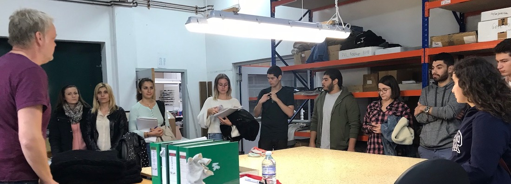

Bache Innovative This wonderful company located close to Kamp-Lintfort produces seamless clothing, textiles for the automotive industry as well as technical 3D textiles among others. The knitting factory Bache exists since the fourth generation and was founded in 1927 by Otto Bache in Apolda/Thuringia, the German stronghold of knitting at that time.
in the following presentation you can find the Presentation of modelling
What are the essential and exciting fields that you could imagine to approach.
think abot a kind of connection or passive joint to implement in your design and think obout the activity
Model 360
Scenario
Finally, put the file and linked it in your repository, We will print in the next week!
Have fun this week.